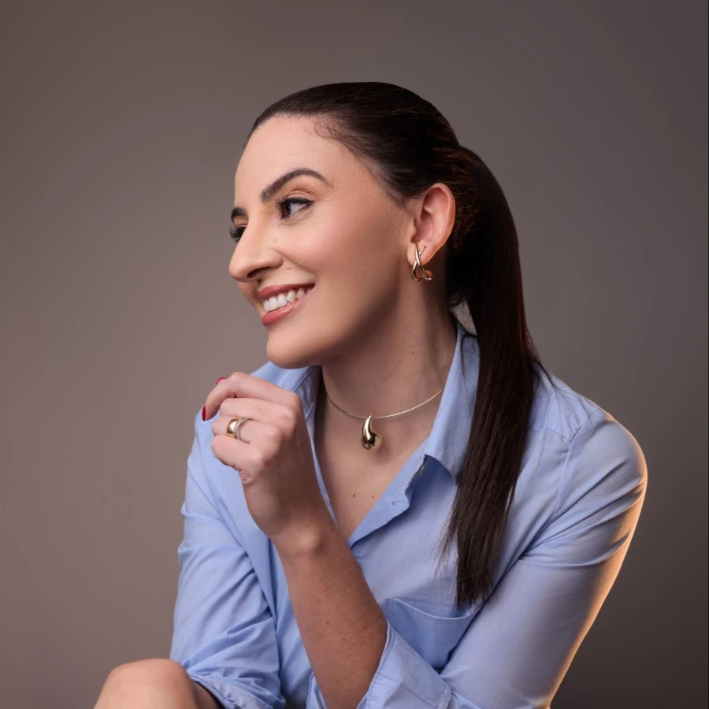

Primeiro contato
Uma conversa para entender a sua situação.
Caroline M. Guerreiro é advogada inscrita na OAB/SC, com atendimento próximo e transparente.

Cada situação tem suas particularidades. O primeiro passo é entender a sua e conhecer, com clareza, os caminhos possíveis.
Uma conversa para entender a sua situação.
Avaliação cuidadosa dos documentos e das alternativas.
Informação clara em cada etapa do caminho escolhido.
Ética. Clareza. Compromisso.
Sou Caroline M. Guerreiro, advogada inscrita na OAB/SC. Acredito em um atendimento próximo, em que cada pessoa entende a própria situação e as alternativas disponíveis.
Cada atendimento começa por uma conversa para entender a sua situação. Documentos, prazos, honorários e próximos passos são tratados diretamente comigo, com transparência.
Envie uma mensagem pelo canal profissional e conte, em poucas palavras, o que você precisa.
A advogada avalia o caso e os documentos para indicar as alternativas possíveis.
Você recebe uma orientação clara sobre cada etapa e decide os próximos passos com segurança.
Informação clara também faz parte do atendimento.
O botão de contato leva ao canal profissional indicado nesta página. Por lá, você apresenta sua dúvida e combina o melhor horário.
Consulte diretamente pelo canal profissional as modalidades de atendimento e a localização do escritório.
Depende da situação. No primeiro contato, a advogada indica os documentos necessários para analisar o seu caso.
Os honorários são combinados diretamente com a advogada, conforme o caso e as referências da OAB. Esta demonstração não recebe pedidos nem pagamentos.
Entre em contato pelo canal profissional para apresentar sua situação e agendar uma conversa.